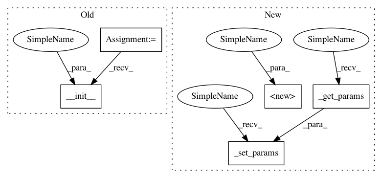

1302c46acecce515014883da7ef25e3f97032b16,GPy/models/warped_GP.py,warpedGP,__init__,#warpedGP#Any#Any#Any#Any#Any#Any#Any#,17
Before Change
self.predict_in_warped_space = False
likelihood = likelihoods.Gaussian(self.transform_data(), normalize=normalize_Y)
GP.__init__(self, X, likelihood, kernel, normalize_X=normalize_X)
def _scale_data(self, Y):
self._Ymax = Y.max()
self._Ymin = Y.min()
After Change
self.predict_in_warped_space = False
likelihood = likelihoods.Gaussian(self.transform_data(), normalize=normalize_Y)
super(warpedGP, self).__init__(self, X, likelihood, kernel, normalize_X=normalize_X)
self._set_params(self._get_params())
def _scale_data(self, Y):
self._Ymax = Y.max()
self._Ymin = Y.min()
In pattern: SUPERPATTERN
Frequency: 4
Non-data size: 5
Instances
Project Name: SheffieldML/GPy
Commit Name: 1302c46acecce515014883da7ef25e3f97032b16
Time: 2013-06-04
Author: alan.daniel.saul@gmail.com
File Name: GPy/models/warped_GP.py
Class Name: warpedGP
Method Name: __init__
Project Name: SheffieldML/GPy
Commit Name: 1302c46acecce515014883da7ef25e3f97032b16
Time: 2013-06-04
Author: alan.daniel.saul@gmail.com
File Name: GPy/models/GPLVM.py
Class Name: GPLVM
Method Name: __init__
Project Name: SheffieldML/GPy
Commit Name: 1302c46acecce515014883da7ef25e3f97032b16
Time: 2013-06-04
Author: alan.daniel.saul@gmail.com
File Name: GPy/models/sparse_GP_regression.py
Class Name: sparse_GP_regression
Method Name: __init__
Project Name: SheffieldML/GPy
Commit Name: 1302c46acecce515014883da7ef25e3f97032b16
Time: 2013-06-04
Author: alan.daniel.saul@gmail.com
File Name: GPy/models/GP_regression.py
Class Name: GP_regression
Method Name: __init__